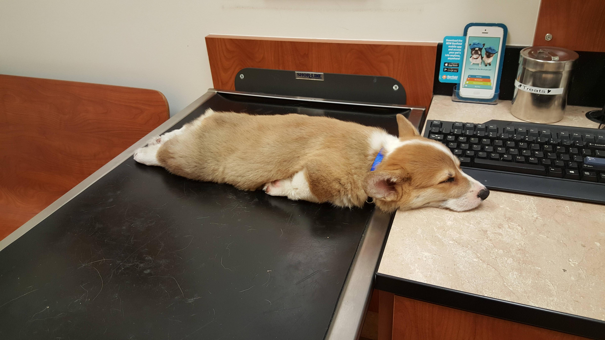

= Document Name
== Title
One sentence per line; rearrange with ease.
* image:corgi.jpg[A corgi wearing glasses]
* https://host.com/links.html[Links]
(defn example [] "code")What are you waiting for?

Figure 1. Waiting patiently for Clojure adoption in the workplace
Train 28 developers in 24 hours

Figure 2. Challenge accepted
Enterprise Clojure Training

Figure 3. An open source training course for Clojure
Target audience
Software Engineers
Who will be using Clojure professionally
Who need to be productive next week
Have a practical focus (files, databases, hadoop)
| This is a boot camp |
The programme
2 days, 10 hours per day
12 sections
1 hour for lunch
2 follow up webinars, 2 hours each
Sections
Mini lecture | 15-25 minutes |
Exercises | 25-35 minutes |
Review | 10 minutes |
Snack break | 10 minutes |
Challenges | When ahead |
Course material
The value of questions
Questions and answers
Helping with the unexpected
Setting pace
Sharing relevant case studies
| Enterprise Clojure Training is a resource for teachers |
Adaptable course material
Easy access (open source)
You can use it to run your own course
Easy to modify
Easy to contribute to
Creating a course

Figure 4. Under the hood of Enterprise Clojure Training
Asciidoctor
Asciidoc is a flavor of markdown
Better for publishing
Excellent tooling support
Github and Github Pages
| Asciidoctor is an improved implementation of Asciidoc |
Flavor of markdown
The documents
Better for publishing
Automatic table of contents
Create books, slides, web pages
Output HTML, PDF, DocBook, ePub
Tables
Code highlighting
Style customization
| Notes/tips/warnings |
Excellent tooling
Produces attractive content by default
brew, apt, ruby, bundler, node, docker
Editor plugins
Chrome live reloading extension
IntelliJ IDEA

Figure 5. Asciidoctor plugin
Chrome live reloading
Renders in the browser direct from
.adocUpdates when the file changes
Slides
Based on RevealJS
asciidoctor-revealjspluginRequires a build step
Event Notify Test Runner (entr)
Watches files
Runs a command on change
Install with brew or apt
./watch.sh
Deploying
Github Pages build
adocvia JekyllBut not slides…
TravisCI auto-build/deploy
Change text, push, done!
Training options
Observations

Figure 6. Learning Clojure is challenging
Change of thinking required

Figure 7. Woha, I get it!
Simple ain’t easy
I had high hopes for Clojure for a while, but they’re fairly user-hostile, even if they think (and loudly assert) that they aren’t.
— Steve Yegge
Tips for learning
Focus on the language first (the mental shift will come later)
Delay investing in tools and editors
Join the community, find a teacher, ask questions
Practise
Read code
4Clojure
Read and follow the style guide
Join the community
ClojureVerse
StackOverflow [clojure] [clojurescript]
Google group: Clojure
Clojurians
I am so happy with, and proud of, the Clojure community. People are helpful, and respectful, and positive.
— Rich Hickey
At work
Figure 8. How did I get here?
Rewind << 2007

Figure 9. My first encounter with Lisp
Rich Hickey <rich@ri…> - 2007-10-17
Hello,
As someone interested in Foil or jFli, I thought you might want to know about my latest project - Clojure, a dialect of Lisp for the JVM. It’s currently alpha, but fairly complete. I’m looking for some feedback from some intrepid folks willing to kick the tires. http://clojure.sourceforge.net/
Please use the Google group for feedback: http://groups.google.com/group/clojure
Regards and thanks,
Rich
2010

Why didn’t I convert my team to Clojure?

Figure 10. I can’t do this on my own
Many people don’t know Clojure

Figure 11. Looking different can feel weird
What are developers waiting for?

Figure 12. Jobs!
What are companies waiting for?

Figure 13. Developers!
What are learners waiting for?
Figure 14. A market!
What are employees waiting for?
Figure 15. A greenfield!
What are employers waiting for?

Figure 16. A framework!
2014
Figure 17. Enterprise facing Clojure startup
2018

Figure 18. Customer facing Clojure startup
Suiteness
Is Clojure Enterprise?

Or not?

Does it matter?
Clojure makes me happy
I want you to be happy too
There are obstacles
There is uncertainty
There is opportunity
Clojure adoption
Figure 19. A challenging knot to approach
Clojure is a great choice for your company
Books
Great community
Experts
Training
| Build better stuff faster |
So what are you waiting for?
Figure 20. Start using Clojure already!
Thank you